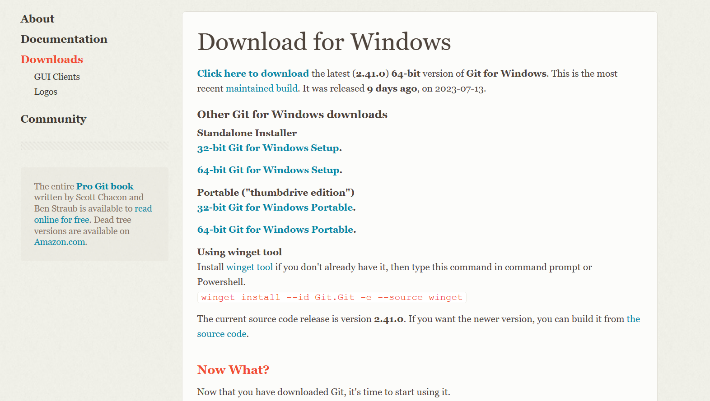
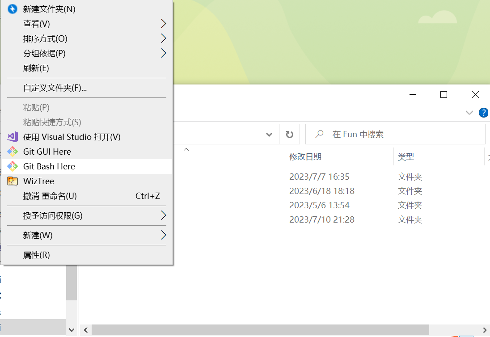
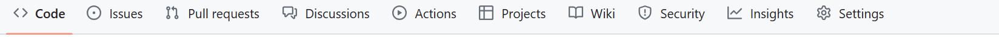
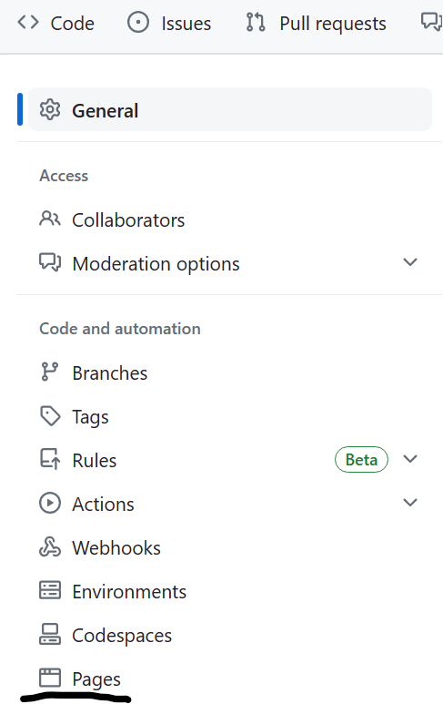

如何搭建学术主页¶
什么是学术主页(academic page)¶
顾名思义，学术主页是展示我们的学术成果，个人简历等等个人经历的网页，方便他人了解我们的学术品味、方向等等。以下是一些例子：
THU 数学系副主任647老师的主页：(http://siqiliu.com/cn/)
THU 数学系教授李思老师：(https://sili-math.github.io/)
可见，除了学术成果外，你也可以放一些自己的笔记(notes)，讲义(lectures)和博文(blog). 值得一提的是，李思老师的主页是部署在GitHub上的
那么如何搭建一个属于自己的学术主页呢？以下分步讲解。
静态网页搭建¶
现在我们介绍的是静态网页，指存放在服务器文件系统中实实在在的HTML文件，对其的修改和部署都在本地完成。可供部署的服务器有GitHub，Gitlab，Gitee等等。这里我们选择喜闻乐见的GitHub。
静态网页有很多模板可供参考，同时，对于搭建博客也有很多十分简单有效的工具:hexo,mkdocs,Jekyll... 本次搭建我们使用hexo完成，因为其生态比较完整，且插件、主题很多。(上手非常简单，包学包会)
第一步——本地安装hexo和git¶
安装Git¶
首先我们需要安装git，如果在小学期时你已经学会了如何使用git，那么可以跳过。
- 在官网:(https://git-scm.com/downloads) ,选择自己电脑对应的版本(windows,linux,mac), 
- 点进去后点击正文第一行“Click here to download”即可。
安装nodejs和hexo¶
nodejs官网安装：https://nodejs.org/en
hexo: 在安装hexo之前我们需要注册GitHub并且建立本地仓库，步骤如下 (默认大家已经注册了GitHub账户)
- 在GitHub上新建一个仓库，仓库名字为: 用户名.github.io 这里的用户名是你自己账号的名字。
- 如果你已经安装了git，那么在你的桌面上新建一个文件夹（当做你的网页存放仓库），在文件夹的页面右键可以发现gitbash，打开它就是一个黑窗口。如下所示 
- 输入
git config --global user.name "你的GitHub用户名" git config --global user.email "你的GitHub注册邮箱"生成ssh-keyssh-keygen -t rsa -C "你的GitHub注册邮箱"此时，在用户文件夹下就会有一个新的文件夹.ssh，里面有刚刚创建的ssh密钥文件id_rsa和id_rsa.pub。
用记事本打开id_rsa.pub文件，ctrl-A+ctrl-c复制里面的所有东西, 打开GitHub网页，点击用户头像进入个人设置，左侧边栏找到Access-SSH and GPG keys
- 点击New SSH key,title随意设置，其余不变，将你复制的东西粘贴进来，最后点击Add SSH key 即可
安装hexo¶
详情见官网:(https://hexo.io/zh-cn/docs/)
安装主题和修改¶
到这里，大家应该能在本地服务器上看见最原始的博客了，不过我们需要更进一步。
指令¶
首先了解几个指令(在gitbash里应用):
hexo clean: 清除已生成的html文件
hexo generate：生成博客
hexo d:(hexo deploy)部署到gitpage上
hexo s:在本地服务器预览博客。
使用时，依次键入前三条即可。
主题¶
可以在(https://hexo.io/themes/index.html) 上浏览主题，也可以直接在GitHub上搜索 hexo themes.
我目前应用的主题是cactus, 方便修改。
具体如何安装主题:(https://blog.csdn.net/weixin_41160054/article/details/89473887)
部署到GitHub上¶
之前提到过 hexo d, 这相当于 git push, 即向仓库提交你的代码，在这里，代码即在本地生成好的网页html代码，将其上传到GitHub上之后，你只需要等待三五分钟，再按下图的顺序依次点击Settings——Page即可预览网页  在侧边栏点击Page  点击visit site即可预览。
一些问题¶
主题选择¶
一般来说选择简洁明了的主题比较好，例如cactus, academic等等。事实上，jekyll可能更加适合于搭建学术主页，不过hexo经过魔改之后也不错(主要是上手更为简单)。